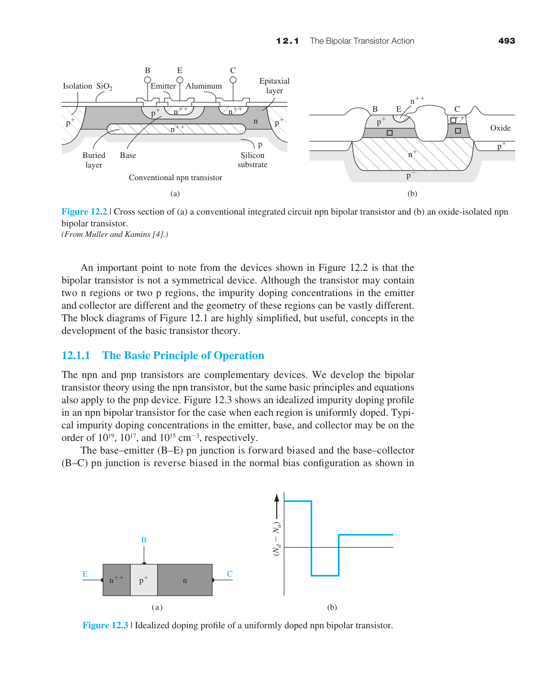
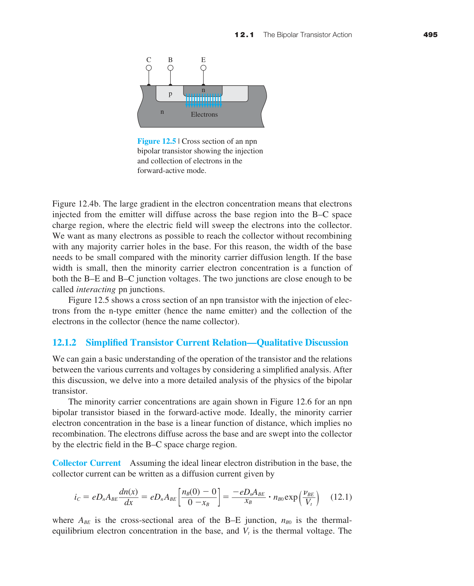
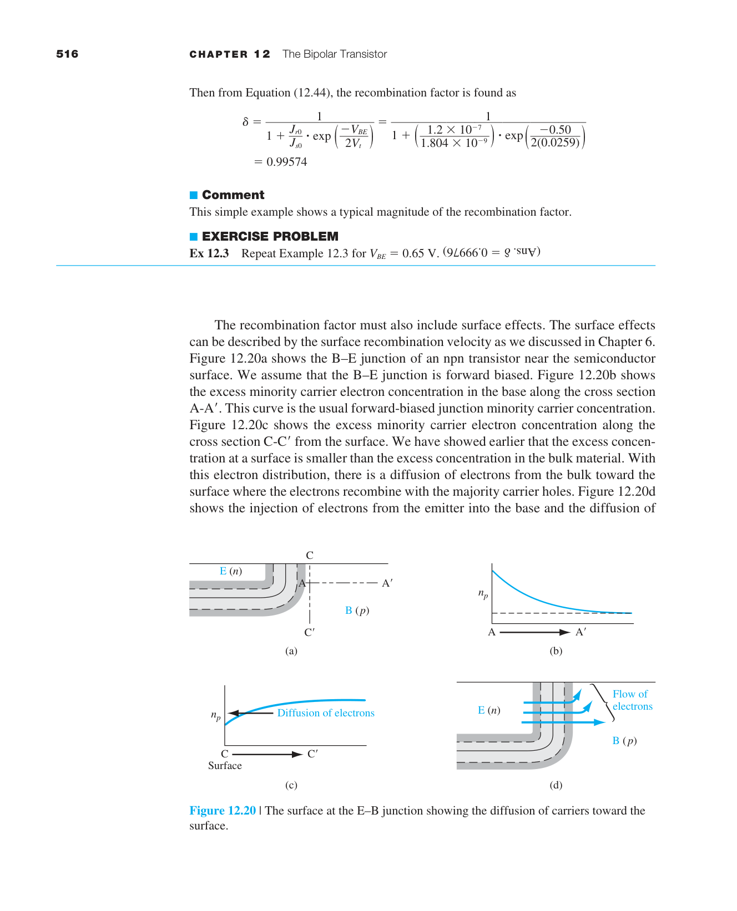
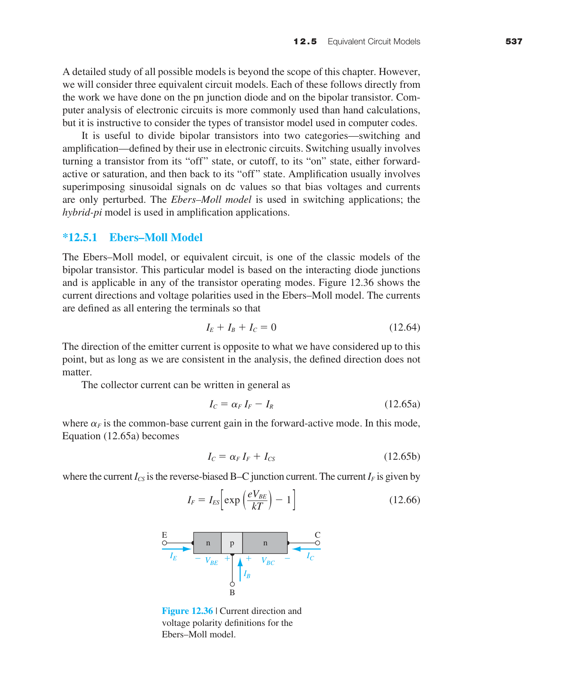
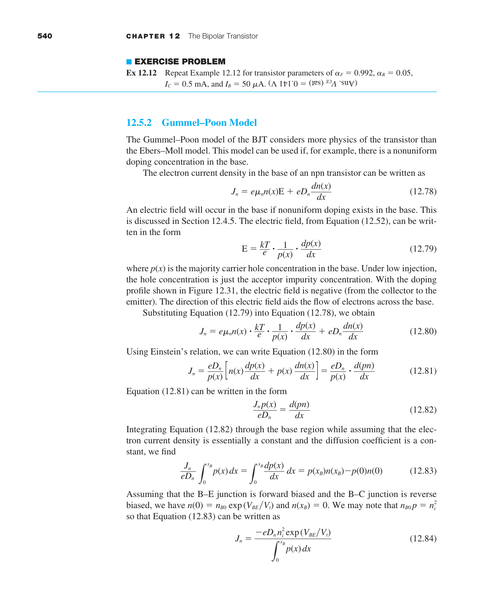
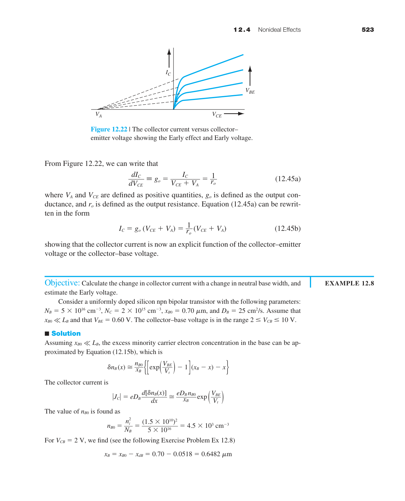

雙極性電晶體——進階概念
第十章建立了 BJT 的直流模型（操作模式、電流增益、Early 效應）。本章在此基礎上深入三個實用面向：頻率響應（BJT 能跑多快？什麼限制了速度？）、開關行為（從 ON 到 OFF 需要多久？）、以及先進 BJT 技術（HBT、SiGe——現代 RF 電路的核心元件）。
如果第十章是「BJT 如何運作」，本章就是「BJT 在高速應用中會出什麼問題，以及如何克服」。$f_T$ 和 $f_{\max}$ 是衡量 BJT 速度的兩個關鍵指標，它們由四個物理時間常數決定——射極充電、基極傳輸、集極渡越、集極充電。理解這四個延遲成分是設計高速 BJT 的基礎。本章最具啟發性的概念是：BJT 的速度極限不在於載子速度本身，而在於充放電各種寄生電容所需的時間。

13.1 BJT 作用回顧與多邊結構
本章假設你已經熟悉第十章的基本 BJT 物理——npn/pnp 結構、順向主動模式、$\alpha=\gamma\cdot\alpha_T$、$\beta=\alpha/(1-\alpha)$、Ebers-Moll 模型。在此基礎上，本節介紹幾種實際積體電路中使用的變體結構。
多射極 BJT（Multi-Emitter BJT）
這是 TTL（Transistor-Transistor Logic，1970–1980 年代的主流數位邏輯家族）的輸入級結構。一個電晶體有多個獨立的射極，所有射極共用同一個基極和集極。哪一個射極被拉低（接地），哪一個射極就注入載子→電晶體導通。多射極結構使 TTL 能夠實現多輸入的邏輯閘（NAND、AND），同時節省晶片面積。
橫向 pnp（Lateral pnp）
標準的 npn BJT 是縱向結構——射極在頂部、基極在中間、集極在底部。載子垂直於晶圓表面流動。橫向 pnp 則不同——射極和集極在同一個平面上（兩側都是 p⁺ 擴散），載子平行於晶圓表面（橫向）流動。這種結構可以在標準 npn 製程中自然形成——不需要額外的光罩或製程步驟。

橫向 pnp 的缺點是 $\beta$ 較低（∼10–50），因為基極寬度由光罩間距決定（而非像縱向 npn 那樣由擴散深度決定→難以做到極窄）。但在 BiCMOS 電路中，它們提供了寶貴的互補元件——不需要複雜的額外製程就能得到 pnp 電晶體。
13.2 BJT 的頻率限制——什麼決定了 BJT 能跑多快 ⭐
BJT 不是瞬間響應的。從射極電壓變化到集極電流變化，需要一段延遲——這就是射極-集極傳輸時間 $\tau_{ec}$。當信號頻率超過 $f_T = 1/(2\pi\tau_{ec})$ 時，BJT 不再能放大電流（電流增益降為 1）。
這四個時間常數各自代表一個物理過程——理解它們的來源和大小，就是理解如何設計高速 BJT：
① 射極充電時間 $\tau_e = r_e C_{je}$
$C_{je}$ 是 BE 接面電容（空乏層電容 + 擴散電容）。$r_e = V_T/I_E$ 是射極的小訊號電阻。$\tau_e = (V_T/I_E)C_{je}$——物理圖像是：要改變 $V_{BE}$，你必須先對 $C_{je}$ 充放電，而充放電的電流路徑經過 $r_e$。$\tau_e \propto 1/I_E$——射極電流越大，$\tau_e$ 越小。這就是為什麼高速 BJT 傾向操作在較高的偏壓電流。
② 基極傳輸時間 $\tau_b = W_B^2/(2D_B)$
這是最重要的時間常數——少數載子擴散跨越基極所需的平均時間。它來自擴散方程的解：一個粒子從 $x=0$ 擴散到 $x=W_B$ 的平均時間是 $W_B^2/(2D_B)$。
數值例子：$W_B=0.1$ µm，$D_B=30$ cm²/s→$\tau_b=(10^{-5})^2/(2\times30)=1.7\times10^{-12}$ s = 1.7 ps。單這個時間常數對應的 $f_T$ 約為 100 GHz。如果 $W_B=0.5$ µm→$\tau_b=42$ ps→$f_T$ 僅 ∼4 GHz。這就是為什麼所有高速 BJT 的首要設計目標就是縮小基極寬度。

③ 集極空乏層渡越時間 $\tau_d = x_d/(2v_{\text{sat}})$
電子穿過 BC 空乏區時，該區域電場極高→電子以飽和速度 $v_{\text{sat}}\approx10^7$ cm/s 運動。$x_d$ 是 BC 空乏區寬度（隨 $V_{CB}$ 增加）。$\tau_d = x_d/(2v_{\text{sat}})$——因子 1/2 來自平均（從 0 加速到 $v_{\text{sat}}$ 的過程）。$x_d=0.2$ µm→$\tau_d=0.2\times10^{-4}/(2\times10^7)=1$ ps。
④ 集極充電時間 $\tau_c = r_c C_{jc}$
$C_{jc}$ 是 BC 接面電容。$r_c$ 是集極串聯電阻（集極中性區的電阻）。這與 $\tau_e$ 對稱——充放電 BC 接面電容所需的時間。
⭐ $f_{\max}$——比 $f_T$ 更嚴格的指標
$f_T$ 只考慮電流增益，但對於功率放大器設計，更重要的是功率增益。$f_{\max}$（最大振盪頻率）是功率增益降至 1 的頻率：
$r_b$（基極電阻）和 $C_{jc}$（BC 接面電容）形成一個低通 RC 濾波器——訊號必須先對 $C_{jc}$ 充放電才能到達輸出。$r_b C_{jc}$ 時間常數限制了功率增益。$f_{\max} > f_T$ 是可能的（如果 $r_b C_{jc}$ 很小），但通常 $f_{\max}$ 是比 $f_T$ 更難提升的指標。
13.3 大訊號開關特性——BJT 從 ON 到 OFF 需要多久
在數位電路中，BJT 頻繁地在截止（OFF）和飽和（ON）之間切換。切換速度受限於兩個物理過程：
導通延遲（Turn-on delay）：從施加基極驅動到 $I_C$ 開始上升。主要是對 BE 接面電容充電的時間。
截止延遲（Turn-off delay）——更大的問題：當 BJT 在飽和區操作時，基極中儲存了大量的過量少數載子（兩個接面都順偏→載子從兩側注入基極）。要關斷 BJT，必須先把這些儲存電荷移除（透過復合或反向基極電流抽取）。儲存時間 $t_s \approx \tau_s\ln[(I_F+I_R)/I_R]$，其中 $\tau_s$ 是飽和區的等效壽命。

13.4 小訊號等效電路與窄基極效應

第十章介紹了基本的混合-π 模型（$g_m, r_\pi, r_o$）。本節補充電容元件——這是高頻行為的關鍵。完整的混合-π 模型包含兩個電容：
$C_\pi$（輸入電容）有兩部分：$C_{je}$（BE 空乏層電容，逆向偏壓相關）和 $\tau_F g_m$（擴散電容，$\propto I_C$）。順向偏壓時擴散電容主導 $C_\pi$。
$C_\mu$（回授電容）= BC 接面電容。$C_\mu$ 雖然小，但因為 Miller 效應，它在輸入端被放大 $(1+g_m R_L)$ 倍→對高頻增益有顯著影響。高速 BJT 設計的一個重要目標是最小化 $C_{jc}$（透過小面積集極、高 $V_{CB}$ 偏壓）。
12.5.2 Gummel-Poon 模型——比 Ebers-Moll 更精確

Ebers-Moll 模型（第十章）用兩個互相耦合的二極體和兩個受控電流源來描述 BJT。它在大多數情況下夠用，但有一個重要限制：它假設 $\alpha_F$ 和 $\alpha_R$ 是常數——不隨電流變化。現實中，$\beta$ 隨 $I_C$ 變化很大（低電流時復合損失主導、高電流時高注入效應主導）。
Gummel-Poon 模型通過引入電荷控制方程來解決這個問題。核心思想：$I_S$ 不再是常數，而是與基極中的總存儲電荷 $Q_B$ 相關：
其中 $Q_B = Q_{B0} + Q_{BE} + Q_{BC}$（包含 BE 和 BC 接面的充電電荷）。當 $Q_B$ 增大（高電流）→$I_C$ 增長速度減緩→自動包含了 Webster 效應和 Kirk 效應。
12.4 BJT 非理想效應——詳細分析
第十章已介紹了基極寬度調變（Early 效應）。本節補充三個在高電流和高壓操作下的重要非理想效應。
12.4.2 高注入效應（Webster Effect）
順向主動模式下，$I_C = I_S e^{V_{BE}/V_T}$ 在低電流時成立。當 $V_{BE}$ 增大到使注入基極的少數載子濃度 $\delta n_B$ 接近基極多數載子濃度 $p_{B0}$ 時，電中性條件要求 $p$ 也必須增加（$p = p_{B0} + \delta n_B$）→有效摻雜濃度增大→$I_S$ 的表觀值增大→$\beta$ 在高電流時下降。這稱為 Webster 效應。
在 Gummel plot 中，$\log I_C$ vs $V_{BE}$ 曲線在高 $V_{BE}$ 處開始偏離直線（斜率降低）——這就是高注入的實驗特徵。
12.4.3 射極能隙窄化（Emitter Bandgap Narrowing）
當射極摻雜濃度 $N_E$ 超過 $\sim10^{18}$ cm$^{-3}$ 時，重摻雜帶來兩個效應：① 雜質能帶形成（impurity band）→禁帶寬度 $E_g$ 縮小。② 多體效應（exchange-correlation）→進一步縮小 $E_g$。
能隙窄化的直接後果：$n_i^2 \propto e^{-E_g/kT}$→$E_g$ 縮小→$n_i^2$ 增大→射極中的少數載子（電洞）濃度增大→注入射極的電洞電流 $I_{pE}$ 增大→$\gamma$ 下降→$\beta$ 下降。
這就是為什麼射極摻雜不能無限提高——超過 $\sim5\times10^{19}$ cm$^{-3}$ 後，$\beta$ 反而下降。最佳射極摻雜通常在 $10^{18}$–$10^{19}$ cm$^{-3}$ 之間。
12.4.4 電流集中（Current Crowding）
基極電流 $I_B$ 從基極接觸橫向流過基區到達基極-射極接面下方。基區有歐姆電阻 $r_b$（基極擴散電阻）→$I_B$ 在 $r_b$ 上產生壓降→射極邊緣的實際 $V_{BE}$ 高於射極中央的 $V_{BE}$→射極邊緣注入更多電流。
結果：射極電流集中在邊緣，中央部分貢獻較少。在高 $I_C$ 下，邊緣的 $V_{BE}$ 最高→先進入高注入→$\beta$ 先下降。這使有效射極面積小於幾何面積→$g_m$ 低於預期。
13.5 HBT 與 SiGe 技術——現代 RF 的基石
第十章討論的 BJT 是同質接面（Si 射極/Si 基極/Si 集極）。異質接面雙極性電晶體（HBT）用一個寬能隙材料作為射極（如 SiGe 中的 Si 射極+漸進 Ge 基極，或 AlGaAs/GaAs HBT）。
HBT 如何突破 $\beta$ 的限制：在同質接面 BJT 中，$\gamma$（射極注入效率）受限於射極和基極的摻雜比 $N_E/N_B$。$N_E$ 不能無限提高（重摻雜→能隙縮小→$\gamma$ 實際上會降）。HBT 的寬能隙射極創造了一個價帶能障——阻止電洞從基極注入射極→$I_{pE}$ 幾乎消失→$\gamma\approx1$，即使射極摻雜不比基極重。這使設計者可以重摻雜基極（降低 $r_b$）而不犧牲 $\gamma$→同時實現高 $\beta$ 和高 $f_{\max}$。

SiGe HBT——矽基高速的王者
SiGe HBT 是目前商用頻率最高的矽基元件：$f_T$ 達 300–500 GHz，$f_{\max}$ 達 500–800 GHz。關鍵創新是基極中漸進的 Ge 組成——Ge 含量從射極端向集極端逐漸增加→能隙逐漸縮小→導帶產生一個內建電場（類似於重力場）→注入的電子被這個「準電場」加速→基極傳輸時間 $\tau_b$ 降至亞皮秒級。SiGe HBT 是手機 RF 前端、光纖通訊驅動器（100 Gbps）、汽車雷達（77 GHz）的主力元件。
本章摘要
- $f_T$ 的四個時間常數：$\tau_e=r_e C_{je}$、$\tau_b=W_B^2/(2D_B)$（⭐ 設計焦點）、$\tau_d=x_d/(2v_{\text{sat}})$、$\tau_c=r_c C_{jc}$。
- $f_{\max}=\sqrt{f_T/(8\pi r_b C_{jc})}$：功率增益的頻率上限。$r_b C_{jc}$ 時間常數是瓶頸。
- BJT 開關：延遲來自基極儲存電荷的移除。蕭特基箝位防止飽和→儲存時間大幅降低。
- 完整混合-π：$C_\pi=C_{je}+\tau_F g_m$（輸入電容），$C_\mu=C_{jc}$（Miller 回授電容）。
- HBT：寬能隙射極→$\gamma\approx1$→可重摻雜基極→$r_b$ 降低→$f_{\max}$ 提升。
- SiGe HBT：漸進 Ge 組成→內建加速電場→$\tau_b$ 降至亞皮秒→$f_T>500$ GHz→毫米波/太赫茲應用。